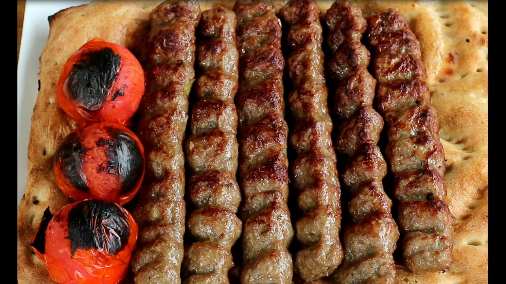

Afghani Kebab is a cornerstone of Afghani cuisine, celebrated for its succulent, tender
meat and subtle seasoning. Unlike heavily spiced regional variants, it relies on a simple
marinade of grated onion, garlic, and minimal spices to let the natural flavor of the meat
shine,
traditionally grilled over open charcoal for distinct, smoky finish.
The secret to its signature juiciness is the inclusion of dunba(lamb tail fat) threaded onto
the skewers between the meat chunks. As the kebab grills over the hot embers, the fat
melts and bastes the meat, keeping it incredibly tender on the inside while creating a
beautiful charred, savory crust on the outside.
Mix the squeezed onion juice, minced garlic, vinegar, vegetable oil,
salt, black pepper, and ground coriander in a large bowl. Toss the meat cubes thoroughly in this mixture, cover,
and refrigerate for at least 4 hours (ideally overnight) to tenderize.
Thread the marinated meat onto wide, flat metal skewers. Alternate by
placing one piece of lamb tail fat (dunba) after every two or three pieces of meat to ensure even basting.
Ignite your charcoal grill and let it burn down until you have a bed of hot,
glowing red coals covered with a thin layer of grey ash. Do not use a flame, as it will burn the exterior before
cooking through.
Place the skewers directly over the hot charcoal. Grill for about 8 to 12 minutes,
turning frequently, until the meat is browned with a slight char and the fat is rendered and bubbling.
Slide the hot meat off the skewers directly into a fold of fresh Afghan naan
to capture the juices. Serve immediately while hot, garnished with sliced raw onions, lemon wedges, and a heavy dust of
ground sumac.